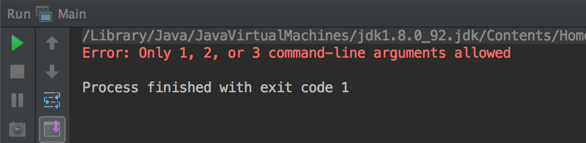
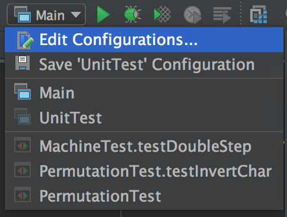
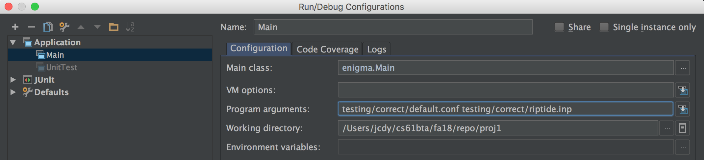
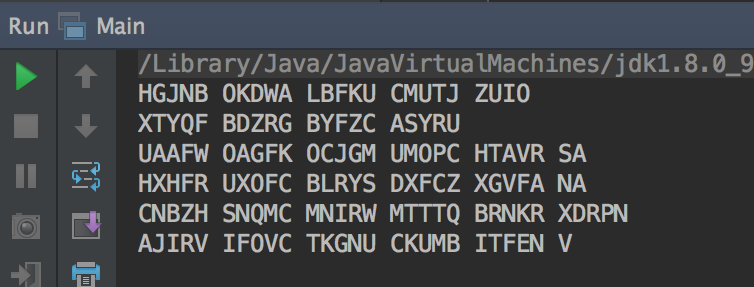

Navigation
A. Introduction
Pull the files for lab 8 from the skeleton.
git fetch shared
git merge shared/lab8 -m "Start lab8"
git pushWriting Tests
In this lab, we will go over how to test your project. There are two components to testing: unit testing and integration testing. Unit tests make sure that a function or subset of functions work properly when given a specific input. Integration tests ensure that the entire project works properly as a whole. Both are important because while individual functions may work properly in an isolated environment, once they start taking in values from other parts of the program, they could break. Here's a visual demonstration of why we need integration tests.
B. Unit Testing
In this section, we will walk through writing your own unit tests. If you decide to create a new file outside of PermutationTest.java or MovingRotorTest.java, make sure to link it in UnitTest.java. We've provided some unit tests you can build off of in MoreEnigmaTests.java, which you should copy into the appropriate test files within your project to run.
Your goal for this lab will be to understand a general approach to writing your own unit tests. Let's start off by writing a simple unit test for the Permutation class! Look in MoreEnigmaTests.java. We have provided a basic outline to test the Permutation::invert method:
@Test
public void testInvertChar() {
Permutation p = new Permutation("(PNH) (ABDFIKLZYXW) (JC)", new CharacterRange('A', 'Z'));
/* TODO: Add additional assert statements here! */
}In unit testing, we aim to isolate certain parts of the program - in this case, the invert method - and test that those individual parts are functioning correctly. Recall that the invert function is defined as follows:
/** Return the result of applying the inverse of this permutation to C. */
int invert(char c) { ... }Given the permutation above, we know the inverse of 'B' should return 'A'. We also know that since the letter 'G' is not explicitly included in any of the cycles - it maps to itself - so we'd expect a call to invert to return 'G'. We can add two assert statements to test this:
assertEquals(p.invert('B'), 'A');
assertEquals(p.invert('G'), 'G');Write a few more of your own test cases for this permutation. What should a call to p.invert('A') return? What about a call to p.invert('J')?
Now that you've written your first unit test, let's test it within your project! Note that in order to run the tests in MoreEnigmaTests.java, you'll have to copy each test into one of your testing files in the Enigma directory. Since we're testing a method within the Permutation class, testInvertChar best belongs in the PermutationTest.java file.
While getting tests to pass actually requires that you completely implement the functions being tested, you don't have to pass them immediately at the time of writing them. Instead, you should create scenarios where you know what is expected to happen. As you fill out the methods, don't forget to run these tests to make sure that your method is correct.
This is a common paradigm known as Test-Driven Development (TDD). It's very helpful because it forces you to actually know the expected behavior of the method for a certain input - knowing this will give you an idea of what and how you should implement it.
Feel free to fill in testPermuteChar and testDerangement following our approach for testInvertChar and copy them into your PermutationTest.java file.
C. Integration Testing
For Enigma, an integration test will test the functionality of the machine as a whole (as opposed to any of the individual parts). In this example, we will be testing that your Enigma machine properly handles double stepping. We'll base our test off of the 4-rotor example as described in the spec.
In MoreEnigmaTests.java. We have provided a helper method getSetting to return the rotor positions. This will help us track the settings of our rotors step by step. We've provided the code to initialize the machine similar to the simple example in the spec: we have an alphabet with only the letters A-D, four rotors numbered R1-R4, each of which has one notch on its ring at the C position. We start with the rotors set at AAAA.
@Test
public void testDoubleStep() {
Alphabet ac = new CharacterRange('A', 'D');
Rotor one = new Reflector("R1", new Permutation("(AC) (BD)", ac));
Rotor two = new MovingRotor("R2", new Permutation("(ABCD)", ac), "C");
Rotor three = new MovingRotor("R3", new Permutation("(ABCD)", ac), "C");
Rotor four = new MovingRotor("R4", new Permutation("(ABCD)", ac), "C");
String setting = "AAA";
Rotor[] machineRotors = {one, two, three, four};
String[] rotors = {"R1", "R2", "R3", "R4"};
Machine mach = new Machine(ac, 4, 3, new ArrayList<>(Arrays.asList(machineRotors)));
mach.insertRotors(rotors);
mach.setRotors(setting);
/* TODO: Add additional assert statements here! */
}Before we do anything, our rotors are all set to position 'A'. Let's test that using getSetting.
assertEquals("AAAA", getSetting(ac, machineRotors));When we input a letter, rotor 4 advances one position. Let's simulate this keypress and check the setting is what we expect.
mach.convert('a');
assertEquals("AAAB", getSetting(ac, machineRotors));Follow this pattern until you hit the double stepping case. For a more in-depth explanation for a similar example, check out this video walkthrough.
Now you can test testDoubleStep within your project. Notice that this isn't testing a particular component of the machine in isolation - this tests the Machine as a whole. Feel free to create a new class, say MachineTest, and copy testDoubleStep into it. Don't forget to link it in UnitTest.java. We encourage you to use this framework for creating more tests, now that you know how to initialize and test the overall machine.
D. Running Enigma in IntelliJ
As touched upon in the spec, you can run your program on the command line. In this section, we will cover how to run Enigma on IntelliJ with input and output files.
We've provided two input files, gitgood.inp and riptide.inp. You can copy them into your testing/correct/ directory in your project.
Navigate to the Main class in your project. Try clicking the green play button next to the main method in Main, and select 'Run Main.main()'. If you haven't previously inputted arguments, you should see an error like this:

We got this error because we haven't passed in any arguments to the program! Notice that between 1 and 3 arguments can be passed in:
- ARGS[0] is the name of a configuration file.
- ARGS[1] names an input file containing messages.
- ARGS[2] names an output file for processed messages.
At the top right hand side of your screen, you should see a dropdown menu now labeled Main. You should click the dropdown and select 'Edit Configurations...'

A window should pop up, and you should be able to enter in your arguments in the Program Arguments bar. If you've copied our provided input files into your directory, you should be able to refer to your default.conf configuration file and the riptide.inp file. Make sure you specify the correct path to your files, with respect to your Working Directory.

This is equivalent to specifying the program arguments as such:
java -ea enigma.Main [configuration file] [input file] [output file]Now run Main.main(). We haven't specified an output file, so you should see the output of your machine in standard output. If you're wondering, you've just encrypted a verse in last summer's CS61BL Musical! See if you can spot your favorite TA ;)
As a reference, you should see output like below. You're welcome to make a new output file and add that to your program arguments if you prefer.

We encourage you to write more of your own input and configuration files and test them as above. Remember, we expect that you have added adequate unit tests and additional integration tests beyond those provided in the skeleton. Hopefully this lab helps with that process and good luck with Enigma! 🐳
There is nothing to submit for this lab.